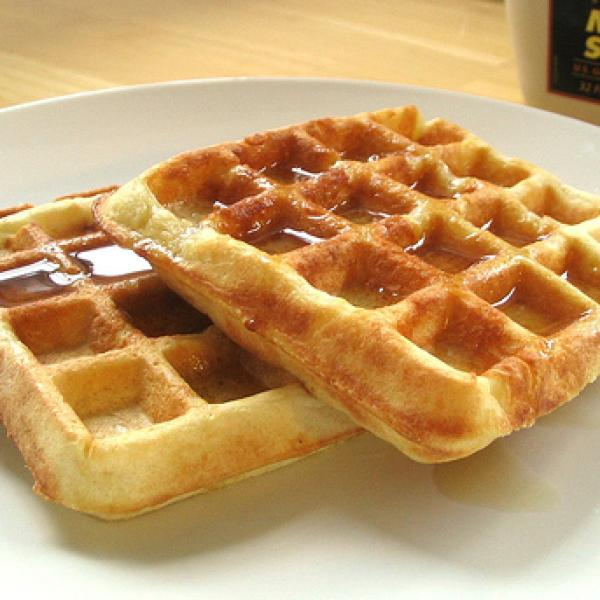

Waffles

"Wake up on the right side of the bed with this top-rated waffle recipe"
Ingredients
- Eggs
- Flour
- Milk
- Oil
- Sugar
- Baking powder
- Salt
- Vanilla
- Cooking spray
Steps
-
Make the batter: Whisk the eggs, then add the flour, milk, and oil.
Whisk in the sugar. Stir in the remaining ingredients.
-
Make the waffles: Pour the batter onto the hot, prepared waffle iron.
Cook until golden brown and repeat with the remaining batter.